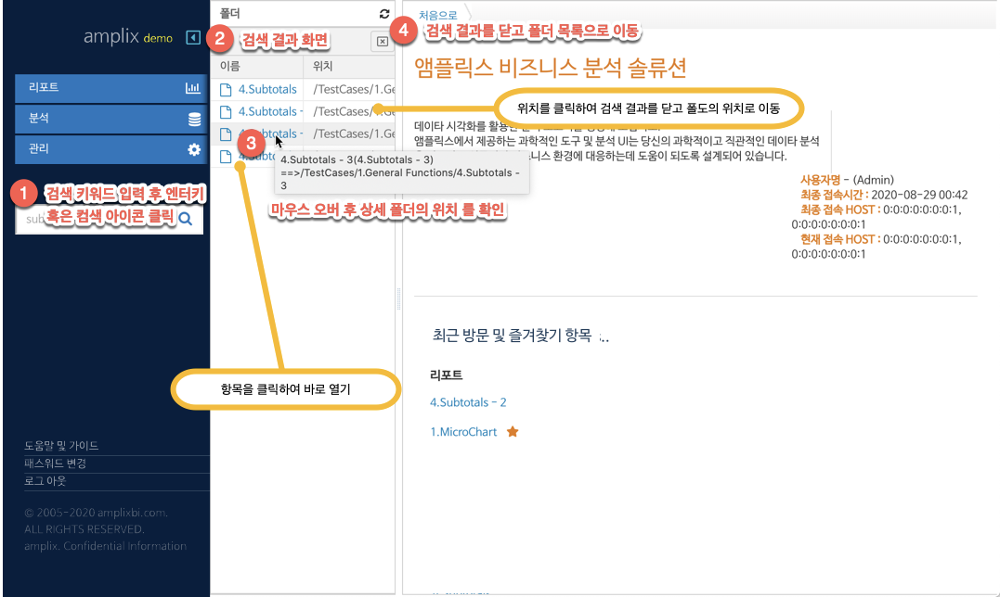

네비게이션
4.1. 사용자 인터페이스 구성
사용자 로그인
(그림 : 로그인 화면 레이아웃)
로그인 인증은 시스템 관리자가 등록한 사용자가 등록된 아이디와 패스워드로 서버에서 인증 처리 된다. 로그인 후 사용자는 메인 메뉴 하단의 패스워드 변경 링크를 클릭하여 비밀 번호를 변경할 수 있다.
비밀 번호의 규칙은 다음과 같다.
- 8자 이상의 영문 알파벳
- 첫 문자는 영문 알파벳으로 시작되어야 함.
- 숫자가 한개 이상 반드시 포함
- 대문자가 한개 이상 반드시 포함
- 소문자가 한개 이상 반드시 포함
- 특수문자를 한개이상 반드시 포함하며 특수문자의 범위는 다음만을 포함한다 (@#$%^&+=)
로그인 오류에 대한 접근 제한
로그인 오류가 5회이상 지속되는 경우 해당 사용자는 10분간 로그인 할 수 없다. 또한 동일 PC 에서 무작위 아이디, 비밀번호 접속 시도에 대한 제한으로 해당 아이피 에서의 10분간 접속이 제한된다. 다음은 시나리오별 사용자의 로그인 접속이 차단되는 경우를 나타낸다.
- 동일 브라우져를 통해 5회 이상의 인증 시도 및 실패 : 해당 브라우져에 대해 10분간 로그인 접속이 차단된다.
- 접속 IP 주소를 통해 10분간 접속하려는 아이디를 통해 5회 이상 인증 실패 하는 경우 : 10분간의 해당 아이디로의 접속 시도가 5회 이상이고 로그인 인증 실패인 경우 접속이 차단된다.
화면 레이아웃 구성
사용자 로그인 후 화면의 레이아웃 구성은 다음과 같다.
(그림 : 메인 화면 레이아웃 구성)
메인 메뉴
메인 메뉴 숨김 감춤 버튼을 통해 보다 작업영역에서의 공간을 확보 할 수 있다. 숨김 버튼은 사이드 메뉴의 폭을 줄이며 해당 메뉴를 클릭하면 세부 메뉴를 선택 할 수 있다.
메인 하단 메뉴
폴더
폴더를 통해 생성된 리포트, 비즈니스 오브젝트 등 객체를 폴더별로 관리 수정할 수 있다. 작업 폴더에 대한 상세한 내용은 "4.2. 폴더관리" 부분을 참조한다.
작업 탭 영역
작업 폴더에서 작업할 리포트, 비즈니스 오브젝트를 클릭 혹은 열기 메뉴를 클릭 하면 탭 형식 패널에 열린다.
처음으로 탭의 기능
처음으로 탭은 항상 첫번째 탭으로 표시되어 쉽게 접근 할수 있다. 로그인한 계정의 최종 접속일과 단말기에 대한 아이피 정보가 표시되어 의도되지 않은 호스트로 접근 되었는지 확인한다.
또한 즐겨찾기 로 등록한 리포트 혹은 최근 열어본 리포트 항목을 바로 확인하고 작업 탭영역으로 불러올수 있다.
항목 검색
키워드 입력 후 검색 버튼 클릭시 폴더 영역에 검색 결과가 표시된다. 검색 결과창 사용 방법은 아래 그림과 같다.

(그림 : 메인화면의 작업 버튼 개요)